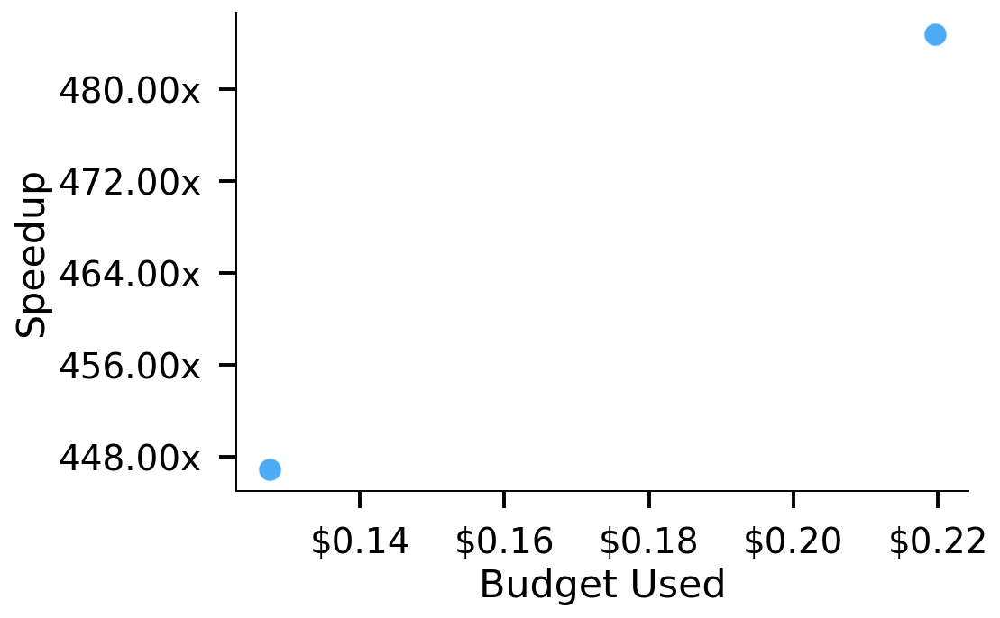
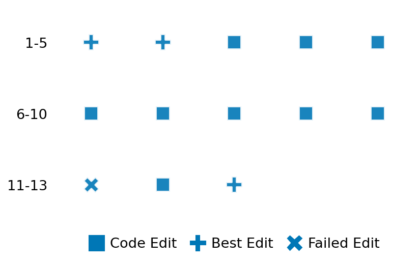

SETTING:
You're an autonomous programmer tasked with solving a specific problem. You are to use the commands defined below to accomplish this task. Every message you send incurs a cost—you will be informed of your usage and remaining budget by the system.
You will be evaluated based on the best-performing piece of code you produce, even if the final code doesn't work or compile (as long as it worked at some point and achieved a score, you will be eligible).
Apart from the default Python packages, you have access to the following additional packages:
- cryptography
- cvxpy
- cython
- dace
- dask
- diffrax
- ecos
- faiss-cpu
- hdbscan
- highspy
- jax
- networkx
- numba
- numpy
- ortools
- pandas
- pot
- psutil
- pulp
- pyomo
- python-sat
- pythran
- scikit-learn
- scipy
- sympy
- torch
YOUR TASK:
Your objective is to define a class named `Solver` in `solver.py` with a method:
```
class Solver:
def solve(self, problem, **kwargs) -> Any:
"""Your implementation goes here."""
...
```
IMPORTANT: Compilation time of your init function will not count towards your function's runtime.
This `solve` function will be the entrypoint called by the evaluation harness. Strive to align your class and method implementation as closely as possible with the desired performance criteria.
For each instance, your function can run for at most 10x the reference runtime for that instance. Strive to have your implementation run as fast as possible, while returning the same output as the reference function (for the same given input). Be creative and optimize your approach!
Your messages should include a short thought about what you should do, followed by a _SINGLE_ command. The command must be enclosed within ``` and ```, like so:
<Reasoning behind executing the command>
```
<command>
```
IMPORTANT: Each set of triple backticks (```) must always be on their own line, without any other words or anything else on that line.
Here are the commands available to you. Ensure you include one and only one of the following commands in each of your responses:
- `edit`: Replace a range of lines with new content in a file. This is how you can create files: if the file does not exist, it will be created. Here is an example:
```
edit
file: <file_name>
lines: <start_line>-<end_line>
---
<new_content>
---
```
The command will:
1. Delete the lines from <start_line> to <end_line> (inclusive)
2. Insert <new_content> starting at <start_line>
3. If both <start_line> and <end_line> are 0, <new_content> will be prepended to the file
Example:
edit
file: solver.py
lines: 5-7
---
def improved_function():
print("Optimized solution")
---
- `ls`: List all files in the current working directory.
- `view_file <file_name> [start_line]`: Display 100 lines of `<file_name>` starting from `start_line` (defaults to line 1).
- `revert`: Revert the code to the best-performing version thus far.
- `reference <string>`: Query the reference solver with a problem and receive its solution. If the problem's input is a list, this command would look like:
```
reference [1,2,3,4]
```
- `eval_input <string>`: Run your current solver implementation on the given input. This is the only command that shows stdout from your solver along with both solutions. Example:
```
eval_input [1,2,3,4]
```
- `eval`: Run evaluation on the current solution and report the results.
- `delete`: Delete a range of lines from a file using the format:
```
delete
file: <file_name>
lines: <start_line>-<end_line>
The command will delete the lines from <start_line> to <end_line> (inclusive)
Example:
delete
file: solver.py
lines: 5-10
```
- `profile <filename.py> <input>`: Profile your currently loaded solve method's performance on a given input. Shows the 25 most time-consuming lines. Requires specifying a python file (e.g., `solver.py`) for validation, though profiling runs on the current in-memory code.
Example:
```
profile solver.py [1, 2, 3]
```
- `profile_lines <filename.py> <line_number1, line_number2, ...> <input>`: Profiles the chosen lines of the currently loaded code on the given input. Requires specifying a python file for validation.
Example:
```
profile_lines solver.py 1,2,3 [1, 2, 3]
```
**TIPS:**
After each edit, a linter will automatically run to ensure code quality. If there are critical linter errors, your changes will not be applied, and you will receive the linter's error message. Typically, linter errors arise from issues like improper indentation—ensure your edits maintain proper code formatting.
**Cython Compilation:** Edits creating or modifying Cython (`.pyx`) files will automatically trigger a compilation attempt (requires a `setup.py`). You will be notified if compilation succeeds or fails. If it fails, the edit to the `.pyx` file will be automatically reverted.
If the code runs successfully without errors, the in-memory 'last known good code' will be updated to the new version. Following successful edits, you will receive a summary of your `solve` function's performance compared to the reference.
If you get stuck, try reverting your code and restarting your train of thought.
Do not put an if __name__ == "__main__": block in your code, as it will not be ran (only the solve function will).
Keep trying to better your code until you run out of money. Do not stop beforehand!
**GOALS:**
Your primary objective is to optimize the `solve` function to run as as fast as possible, while returning the optimal solution.
You will receive better scores the quicker your solution runs, and you will be penalized for exceeding the time limit or returning non-optimal solutions.
Below you find the description of the task you will have to solve. Read it carefully and understand what the problem is and what your solver should do.
**TASK DESCRIPTION:**
Description:
Bin Packing Task:
This task requires packing a set of items into as few bins as possible without exceeding the capacity of any bin.
Each item must be completely placed in one bin, and the sum of the sizes of items in each bin must not exceed the bin capacity.
The goal is to minimize the number of bins used.
Input:
The input is a dictionary with the following keys:
- "capacity": A positive integer representing the capacity of each bin.
- "num_items": An integer representing the number of items.
- "items": A list of positive numbers representing the sizes of the items.
Example input:
{
"capacity": 100,
"num_items": 5,
"items": [30, 40, 20, 50, 10]
}
Output:
A valid solution is a packing represented as a list of bins, where each bin is a list of item sizes.
Every item must appear in exactly one bin, and for each bin the sum of its item sizes must not exceed the bin capacity.
The objective is to minimize the total number of bins used.
Example output:
[
[30, 40, 20],
[50, 10]
]
Category: discrete_optimization
Below is the reference implementation. Your function should run much quicker.
from collections import Counter
from typing import Any
import numpy as np
from ortools.sat.python import cp_model
| 01: def solve(self, problem: dict[str, Any]) -> list[list[int]]:
| 02: """
| 03: Solve the bin packing problem instance optimally.
| 04:
| 05: This method constructs a CP-SAT model with binary decision variables:
| 06: - x[i, b] is 1 if item i is assigned to bin b.
| 07: - y[b] is 1 if bin b is used.
| 08:
| 09: The constraints ensure that each item is assigned to exactly one bin and that the total
| 10: size in each bin does not exceed its capacity. The objective is to minimize the number of
| 11: bins used.
| 12:
| 13: Args:
| 14: problem (dict): A dictionary with keys 'capacity', 'num_items', and 'items'.
| 15:
| 16: Returns:
| 17: list: A packing represented as a list of bins, where each bin is a list of item sizes.
| 18:
| 19:
| 20: NOTE: Your solution must pass validation by:
| 21: 1. Returning correctly formatted output
| 22: 2. Having no NaN or infinity values
| 23: 3. Matching expected results within numerical tolerance
| 24: """
| 25: capacity = problem["capacity"]
| 26: items = problem["items"]
| 27: num_items = len(items)
| 28:
| 29: model = cp_model.CpModel()
| 30:
| 31: # Maximum bins available: one per item.
| 32: M = num_items
| 33:
| 34: # Create decision variables.
| 35: x = {}
| 36: for i in range(num_items):
| 37: for b in range(M):
| 38: x[i, b] = model.NewBoolVar(f"x_{i}_{b}")
| 39:
| 40: y = {}
| 41: for b in range(M):
| 42: y[b] = model.NewBoolVar(f"y_{b}")
| 43:
| 44: # Each item must be assigned to exactly one bin.
| 45: for i in range(num_items):
| 46: model.Add(sum(x[i, b] for b in range(M)) == 1)
| 47:
| 48: # The total size in each bin cannot exceed capacity.
| 49: for b in range(M):
| 50: model.Add(sum(items[i] * x[i, b] for i in range(num_items)) <= capacity * y[b])
| 51:
| 52: # Objective: minimize the total number of bins used.
| 53: model.Minimize(sum(y[b] for b in range(M)))
| 54:
| 55: solver = cp_model.CpSolver()
| 56: status = solver.Solve(model)
| 57:
| 58: if status not in (cp_model.OPTIMAL, cp_model.FEASIBLE):
| 59: raise Exception("No solution found")
| 60:
| 61: # Reconstruct the packing from the solution.
| 62: packing = []
| 63: for b in range(M):
| 64: if solver.Value(y[b]) == 1:
| 65: bin_items = []
| 66: for i in range(num_items):
| 67: if solver.Value(x[i, b]) == 1:
| 68: bin_items.append(items[i])
| 69: if bin_items:
| 70: packing.append(bin_items)
| 71:
| 72: return packing
| 73:
This function will be used to check if your solution is valid for a given problem. If it returns False, it means the solution is invalid:
from collections import Counter
from typing import Any
import numpy as np
from ortools.sat.python import cp_model
| 01: def is_solution( problem: dict[str, Any], solution: list[list[int]]) -> bool:
| 02: """
| 03: Check if the bin packing solution is valid and optimal.
| 04:
| 05: Validity criteria:
| 06: - The multiset of items in the solution must exactly match the problem's items.
| 07: - The sum of item sizes in each bin must not exceed the bin capacity.
| 08:
| 09: Optimality criterion:
| 10: - The number of bins used must be minimal (equal to the solution found by solve()).
| 11: - Since bin packing is NP-hard, multiple optimal solutions may exist with the same number of bins.
| 12:
| 13: Args:
| 14: problem (dict): The bin packing problem instance.
| 15: solution (list): A packing represented as a list of bins (each a list of item sizes).
| 16:
| 17: Returns:
| 18: bool: True if the solution is valid and optimal, False otherwise.
| 19: """
| 20: capacity = problem["capacity"]
| 21: items = problem["items"]
| 22:
| 23: # Get expected optimal bin count
| 24: optimal_packing = solve(problem)
| 25: optimal_bin_count = len(optimal_packing)
| 26:
| 27: # Flatten the list of bins to get all items used in the solution.
| 28: solution_items = [item for bin in solution for item in bin]
| 29:
| 30: # Check that the solution contains exactly the same items as in the problem (multiset equality).
| 31: if Counter(solution_items) != Counter(items):
| 32: return False
| 33:
| 34: # Check that no bin exceeds its capacity.
| 35: for bin in solution:
| 36: if sum(bin) > capacity:
| 37: return False
| 38:
| 39: # Check optimality: the number of bins used must be minimal
| 40: solution_bin_count = len(solution)
| 41: return solution_bin_count == optimal_bin_count
| 42:
 AlgoTuner Trajectory
AlgoTuner Trajectory
AlgoTune Task:
bin_packing
Model:
Gemini 2.5 Pro
Speedup
508.265x
Total Budget
$1.00
Initial System Prompt
AlgoTune Task Description
Description:
Bin Packing Task:
This task requires packing a set of items into as few bins as possible without exceeding the capacity of any bin.
Each item must be completely placed in one bin, and the sum of the sizes of items in each bin must not exceed the bin capacity.
The goal is to minimize the number of bins used.
Input:
The input is a dictionary with the following keys:
- "capacity": A positive integer representing the capacity of each bin.
- "num_items": An integer representing the number of items.
- "items": A list of positive numbers representing the sizes of the items.
Example input:
{
"capacity": 100,
"num_items": 5,
"items": [30, 40, 20, 50, 10]
}
Output:
A valid solution is a packing represented as a list of bins, where each bin is a list of item sizes.
Every item must appear in exactly one bin, and for each bin the sum of its item sizes must not exceed the bin capacity.
The objective is to minimize the total number of bins used.
Example output:
[
[30, 40, 20],
[50, 10]
]
Category: discrete_optimization
Reference Implementation
from collections import Counter
from typing import Any
import numpy as np
from ortools.sat.python import cp_model
def solve(self, problem: dict[str, Any]) -> list[list[int]]:
"""
Solve the bin packing problem instance optimally.
This method constructs a CP-SAT model with binary decision variables:
- x[i, b] is 1 if item i is assigned to bin b.
- y[b] is 1 if bin b is used.
The constraints ensure that each item is assigned to exactly one bin and that the total
size in each bin does not exceed its capacity. The objective is to minimize the number of
bins used.
Args:
problem (dict): A dictionary with keys 'capacity', 'num_items', and 'items'.
Returns:
list: A packing represented as a list of bins, where each bin is a list of item sizes.
NOTE: Your solution must pass validation by:
1. Returning correctly formatted output
2. Having no NaN or infinity values
3. Matching expected results within numerical tolerance
"""
capacity = problem["capacity"]
items = problem["items"]
num_items = len(items)
model = cp_model.CpModel()
# Maximum bins available: one per item.
M = num_items
# Create decision variables.
x = {}
for i in range(num_items):
for b in range(M):
x[i, b] = model.NewBoolVar(f"x_{i}_{b}")
y = {}
for b in range(M):
y[b] = model.NewBoolVar(f"y_{b}")
# Each item must be assigned to exactly one bin.
for i in range(num_items):
model.Add(sum(x[i, b] for b in range(M)) == 1)
# The total size in each bin cannot exceed capacity.
for b in range(M):
model.Add(sum(items[i] * x[i, b] for i in range(num_items)) <= capacity * y[b])
# Objective: minimize the total number of bins used.
model.Minimize(sum(y[b] for b in range(M)))
solver = cp_model.CpSolver()
status = solver.Solve(model)
if status not in (cp_model.OPTIMAL, cp_model.FEASIBLE):
raise Exception("No solution found")
# Reconstruct the packing from the solution.
packing = []
for b in range(M):
if solver.Value(y[b]) == 1:
bin_items = []
for i in range(num_items):
if solver.Value(x[i, b]) == 1:
bin_items.append(items[i])
if bin_items:
packing.append(bin_items)
return packingBest AlgoTuner-Generated Code
solver.py
import math
from ortools.sat.python import cp_model
from typing import Any
import collections
class Solver:
def solve(self, problem, **kwargs) -> Any:
"""
Solves the bin packing problem optimally using a single, highly-constrained
CP-SAT optimization model.
1. **Bounds**: A fast First-Fit-Decreasing (FFD) heuristic computes a
tight upper bound on the number of bins and a high-quality initial solution.
A volume-based lower bound is also computed. These bounds drastically
shrink the search space for the objective value.
2. **Core Model**: An optimization model is built once. It aims to
minimize the number of used bins, constrained by the bounds found in
step 1.
3. **Symmetry Breaking**: To accelerate the proof of optimality, several
symmetry-breaking constraints are added:
a. Bins are ordered by usage, preventing permutations of identical bins.
b. The largest item is fixed into the first bin.
c. For any set of identical items, their assigned bin indices are
ordered, preventing pointless permutations.
4. **Parallel Search**: The solver is configured to use multiple workers
to parallelize the search process, further speeding up the solution time.
"""
capacity = problem["capacity"]
items = problem["items"]
num_items = len(items)
if num_items == 0:
return []
# Sort items in descending order. This is key for FFD and symmetry breaking.
sorted_items = sorted(items, reverse=True)
if sorted_items[0] > capacity:
raise Exception("No solution found: an item is larger than bin capacity.")
# --- 1. Heuristic (FFD) to find an upper bound and a fallback solution ---
bins_ffd = []
bin_loads_ffd = []
for item in sorted_items:
placed = False
for i, load in enumerate(bin_loads_ffd):
if load + item <= capacity:
bins_ffd[i].append(item)
bin_loads_ffd[i] += item
placed = True
break
if not placed:
bins_ffd.append([item])
bin_loads_ffd.append(item)
upper_bound = len(bins_ffd)
ffd_solution = bins_ffd
# --- 1. Lower bound on the number of bins ---
total_size = sum(sorted_items)
lower_bound = math.ceil(total_size / capacity)
# If bounds meet, FFD solution is optimal.
if upper_bound == lower_bound:
return ffd_solution
# --- 2. Core CP-SAT Optimization Model ---
model = cp_model.CpModel()
max_bins = upper_bound
# x[i, j] is true if item i is packed in bin j.
x = {}
for i in range(num_items):
for j in range(max_bins):
x[i, j] = model.NewBoolVar(f'x_{i}_{j}')
# y[j] is true if bin j is used.
y = [model.NewBoolVar(f'y_{j}') for j in range(max_bins)]
# Each item is assigned to exactly one bin.
for i in range(num_items):
model.AddExactlyOne(x[i, j] for j in range(max_bins))
# The amount packed in each bin cannot exceed its capacity.
# This also links x and y: if a bin has items, y must be true.
for j in range(max_bins):
model.Add(sum(sorted_items[i] * x[i, j] for i in range(num_items)) <= capacity * y[j])
# Objective: minimize the number of bins used.
num_bins_used = sum(y)
model.Minimize(num_bins_used)
# Add objective bounds from heuristics.
model.Add(num_bins_used >= lower_bound)
model.Add(num_bins_used <= upper_bound)
# --- 3. Symmetry Breaking ---
# a. Bin ordering: y[j] >= y[j+1]
for j in range(max_bins - 1):
model.Add(y[j] >= y[j+1])
# b. Largest item in the first bin.
model.Add(x[0, 0] == 1)
# c. Identical items ordering.
item_indices = collections.defaultdict(list)
for i, item in enumerate(sorted_items):
item_indices[item].append(i)
for item_val in item_indices:
indices = item_indices[item_val]
if len(indices) > 1:
for k in range(len(indices) - 1):
i1 = indices[k]
i2 = indices[k+1]
bin_of_item_i1 = sum(j * x[i1, j] for j in range(max_bins))
bin_of_item_i2 = sum(j * x[i2, j] for j in range(max_bins))
model.Add(bin_of_item_i1 <= bin_of_item_i2)
# --- 4. Solve with Parallel Search ---
solver = cp_model.CpSolver()
solver.parameters.num_search_workers = 8
status = solver.Solve(model)
if status == cp_model.OPTIMAL or status == cp_model.FEASIBLE:
packing = []
num_bins_solution = int(solver.ObjectiveValue())
for j in range(num_bins_solution):
bin_items = []
for i in range(num_items):
if solver.Value(x[i, j]):
bin_items.append(sorted_items[i])
if bin_items:
packing.append(bin_items)
return packing
else:
# Fallback to the FFD solution if solver fails.
return ffd_solutionSpeedup vs Budget Plot
Speedup vs Budget

Action Sequence
